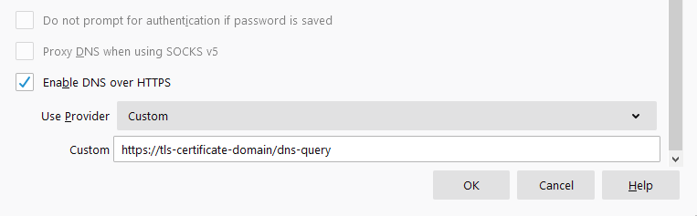

Technitium DNS Server
This server supports encrypted DNS protocol (DNS-over-HTTPS) that you can use with your web browser like Mozilla Firefox.
The Encrypted DNS Service URL
Use the following URL to configure your clients for consuming the DNS-over-HTTPS service.
Mozilla Firefox Configuration
To configure Firefox, go to Settings > Privacy & Security and scroll down to find DNS over HTTPS section. Click on the Max Protection option, select Custom option in the Choose provider drop down box, and enter the encrypted DNS service URL given above.
Note! This will work only for Firefox and all other applications on your computer will keep using the default DNS server configured in your network settings.